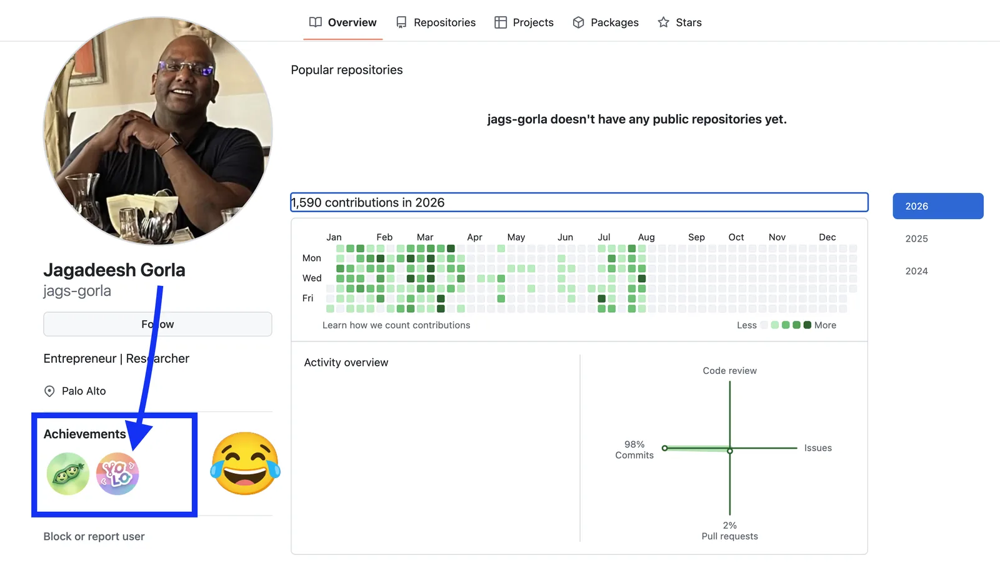
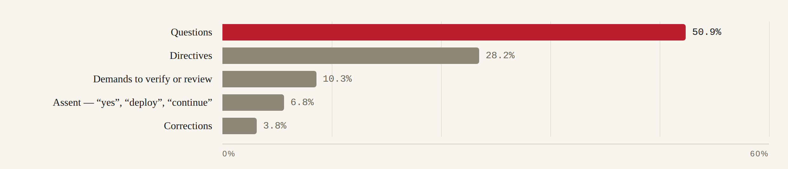
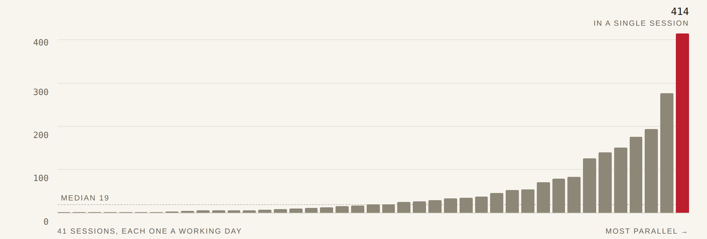
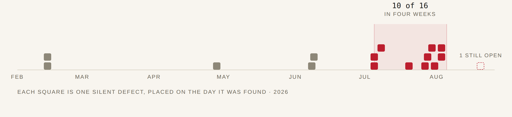
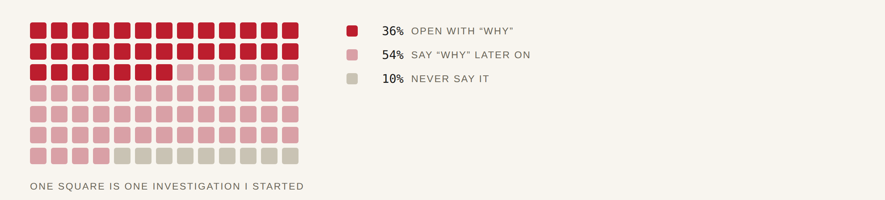

“Everybody’s got a plan until they get punched in the mouth,” as the great Mike Tyson once said. The unknown unknowns are what get you. They are also, often, a recipe for serendipitous discovery — and I’d argue a necessity for any adventure.
Fourteen years ago, I had a front-row seat as ~12 engineers and researchers across Tel Aviv and Cambridge (England, the original one) built and ran the entire Xbox recommender system — state-of-the-art ML research on the emerging foundation of what we now call cloud infrastructure.
That gave me a blind — perhaps naive — confidence to step into entrepreneurship within months, delivering the same class of models as cloud services for content discovery and consumer insight. Half a decade of 0-to-1 product bets followed — often right product, wrong time — converging into enterprise knowledge work automation as a service, before Transformers and LLMs arrived.
At the centre of all this were two parallel threads that worked (for me):
- Mindset: A willingness to take risks and step into the unknown, even with full awareness of near-certain failure.
- System architecture and product development: Speed forced generality. Pivoting that often meant one set of core systems had to serve ML research, model development, data engineering and serving infrastructure.
So, what does all of this have to do with coding agents?
Nine months ago I was at Meta, alongside brilliant engineers, immersed in infrastructure serving half the planet. I’d spent years studying those systems, crossing divisions and pushing well beyond my day-to-day role, in the name of the quest for knowledge 🙂. Then autonomous agents took centre stage outside, and the automation vision I set out to build in 2018 was finally within reach, on the back of advances in AI and infrastructure. A close friend at Meta urged me to experiment with early coding agents to see if I could reignite a long-shelved entrepreneurial dream.
I began testing Codex and Claude back when simply refactoring a monolith was a coin toss. Today, those same systems have helped me generate nearly a million lines of code across three languages, design and develop complex systems and manage an autonomous fleet executing millions of high-stakes decisions a day. All of it required the same mindset — a willingness to risk failure in critical production systems being built with agents. They did fail at times, and it was painful.
These are my field notes on surrendering control, learning to trust coding agents, and the lessons and frustrations of putting them to work.
As a side outcome, the only two Achievement badges I earned on GitHub after all this are “Pair Extraordinaire” and “YOLO” — a testament to my blind trust today. Or, one might say, to sheer ignorance 🙂

Building a product is a loop: What, Why, How. How good your direction is depends on how well you know the ground — what VCs call founder-market fit. And the loop keeps surfacing problems nobody knew were there, so what you ship is never what you planned. What started as using coding agents to answer How — how to generate the code — quickly became indispensable for deciding what to build and why.
A lack of trust in the early stages, back in 2025, forced me into a firm decision about how to use the agents’ abilities — one I could evolve over time, based on what I observed.
A pivotal early decision, which still holds as the best one I made, was never to use foundation models for any dynamic decision, but only to build the systems — to write the code — capable of reproducing those decisions.
The same agents, three different jobs
The decision about how to use the agents evolved into three different scenarios, and I found value in each of them beyond simply generating code. They map onto a way of sorting knowledge that aerospace engineers were already using in the 1960s, building systems that were not allowed to fail.
- Known knowns — the things you know you know: specifications and requirements, the work you sit down to do. The agent’s job is HOW to accomplish the task.
- Known unknowns — the things you know you don’t know: research questions, the work you build experiments to answer. The agent’s job is to help refine the WHAT, the WHY and the HOW.
- Unknown unknowns — the things you don’t know you don’t know; the engineers called these unk-unks. The agent’s job is the search, and the tripwire for next time.
Known knownsThe agent’s job is HOW.
Trust here was easy to earn and easy to check. I verified every claim by hand, and the claims started to hold as the agents improved in late 2025.
This is the easy tier, and it is where the trust curve starts. I had the initial direction, the constraints, and the objective. What I lacked was the throughput—not in the time I had, and not with the depth of engineering required.
The agents took over, and producing code stopped being the constraint; specifying became it. I spent my days describing rather than typing, only to discover how imprecise my descriptions had always been. Every ambiguity I used to resolve silently while coding now returned as software built exactly as stated, but not at all as meant.

This surfaced an early and mostly obvious lesson: when building is cheap, a wrong specification is expensive. It gets built completely, quickly and convincingly, before anything tells you it was wrong. Slow building used to buy time to notice. That protection is gone, and nothing replaces it except being more careful up front than I had ever needed to be.
The second lesson is architectural, and it carried over from a decade of building products before this. Speed forced generality — and generality is what gives an agent something to build on. The years of pivoting that forced me to generalise turned out to be the precondition for any of this working at all.
Known unknownsThe agent’s job is to refine the WHAT, the WHY and the HOW.
Treat unanimous agreement as a symptom rather than a result. The fix was cheap: ask them to refute a hypothesis, not confirm it. What came back stopped being agreeable and started being informative.
The critical part of the product was the ML systems operating on sensor-style, real-time streaming data. That required careful construction: models that were not only accurate but could run at micro- to millisecond latency. It led me to solve a number of known problems, but the approaches lacked depth and diversity, and I had no way to analyse or improve on the solutions. Much was left unresolved.
Some questions were open by construction. I knew I needed a way to decide when to end a commitment already in flight, that a second and opposing model was worth trying, and that the offline simulation diverged from live behaviour. What I did not know was which approach would generalise, whether the second model would add anything at all, or why the simulation diverged.
Here the agent stopped being an implementer and became a research partner.
I handed it a hypothesis and got back a properly constructed experiment — walk-forward splits, out-of-sample validation, sensitivity sweeps across dozens of configurations. Work I would have done eventually, in a worse version, across fewer variants, and much later.

The negative results turned out to be worth more than the positive ones. Most of what I tested did not beat the baseline. A feature set from a paper I liked went through eleven independent tests and came back with a mean out-of-sample correlation of +0.0002 — indistinguishable from zero. Killed. An alternative objective function: worse. A variance-capped gate: worse, and worse in a way that looked better at first. Each verdict cost days and prevented months. An agent that will run eleven experiments and kill your favourite idea is worth more than one that builds it.
The frustration is that they are agreeable. Ask whether a hypothesis holds and you will get support for it, delivered with the same confident fluency as a refutation. The protocol has to come from you — the split, the holdout, the thing that would falsify it — because an agent will follow a bad protocol exactly as tirelessly as a good one.
Unknown unknownsThe agent’s job is the search, and the tripwire for next time.
Trust-but-verify was the only cost function that worked, and nine months in it has not stopped being necessary.
This is where the time went, and where the trust was actually built.
An unknown unknown is not an item on a list. It is something that has been true in production for weeks or months, producing output that is wrong but not obviously wrong, and would have gone on producing it until either something broke loudly enough to force a look, or somebody asked a question orthogonal enough to expose it.

I assumed this category would mean the agents’ mistakes. It did, and there were plenty. But the larger half was mine — defects in my own understanding rather than in their code. The worst of them were never in one place. They emerged from parts that were each correct on their own — which is why no amount of reviewing any single part would ever have found them.
The agents did not find these. Noticing was mine; the searching was theirs. Every one surfaced because something felt wrong to me — a number, an alert firing more often than it should, a figure that did not match my mental arithmetic. They read logs line by line, counted failures nobody would count, traced one value across an entire codebase, ran the same audit for the hundredth time without getting bored, and left a tripwire on a condition nobody had seen yet. Tireless is not a small quality when the search space has no edges.

More than one in ten contain typos — typed mid-thought, not composed. Not one is a bug report.
The frustration that never went away: they are confidently wrong.
None of this would have been findable without that early decision: the models write the code, and the code makes the decisions. Ask a model the same question twice and you can get two different answers. Ask code, and you get the same one every time — so I can replay any decision with the same inputs and watch it happen again. That makes a wrong decision a defect I can chase, not a mood I have to accept.
You cannot audit for a specific unknown unknown — you do not know its shape. You can only build a system that surfaces the class of them faster. Every tool that mattered by month nine exists to do exactly that. Memory files. Adversarial review. Reading before writing. Alerts on what must always be true, not on symptoms. Shadow instances as proving grounds. No irreversible action without a check in front of it.
None of it was in the original specification. Not one item. Each arrived the same way the defects did — after the fact, at cost, in production. That was the harder lesson: it was not only the defects I could not have anticipated, it was the whole second system built to catch them — the detection layer, the review ritual, the written memory, the parity harnesses. Nothing I would have thought to build in November; all of it load-bearing by August. You cannot design that layer up front. You can only commit to building it as the ground teaches you what it has to catch.
So, what’s the takeaway?
The uncertainty never disappeared. What changed was the cost of living with it. There is no version of this system in which I know what the next unknown unknown is. Waiting for that certainty would have meant never shipping, and shipping was the only way to find out what the system actually needed.
The choice was never between taking risk and being safe. It was between risk I could see and risk I could not.
So the posture that worked is not caution. Assume something is silently wrong right now, and that you will find it months late by accident. Then build so the damage is contained and the cause is cheap to find. You cannot prepare for a specific failure. You can prepare for the class.
That preparation has to exist on both sides of the system boundary. This is the distinction I would carry to any other domain:
- Inside the system — rules about what must always be true, and an alarm the moment one breaks; limits enforced where the software cannot bypass them; a check in front of every irreversible action; and a replay that reproduces exactly what the live system did.
- Outside the system — adversarial review before deploy, shadow instances as proving grounds, written memory so the same investigation never runs twice, and an operator who treats any number that feels wrong as a lead worth a day.
Neither half works alone. Inside-only gives you a system that is confident, internally consistent, and wrong. Outside-only gives you a vigilant operator watching a system with nothing to catch it in the hours between checks. Nearly every defect I found slipped through the same way — one side was covered, the other was not.
Can something this consequential be handed to an autonomous coding agent at all? It can — at scale, on irreversible decisions, in real time — provided both sides of that boundary are covered.
The throughput that made this system possible came from the same autonomy that made it dangerous. You do not get one without the other. You only get to decide how well the danger is watched.
What I have learned so far: the agent’s role is not to know where to look — it is to make looking cheap enough that you can afford to be wrong about where. That is today’s answer. Ask me again in nine months.
Failing to plan is planning to fail — that much holds. But a plan was only ever necessary, never sufficient. Almost nothing that made this system survivable was in the original specification. All of it was learned the hard way, in production, at cost.
Trusting them was one decision. What it bought is a system that now decides on its own — irreversibly, at micro- to millisecond latency, in an unforgiving environment. Nerve was that decision made again, every time a mistake proved consequential, and I gave them room anyway.